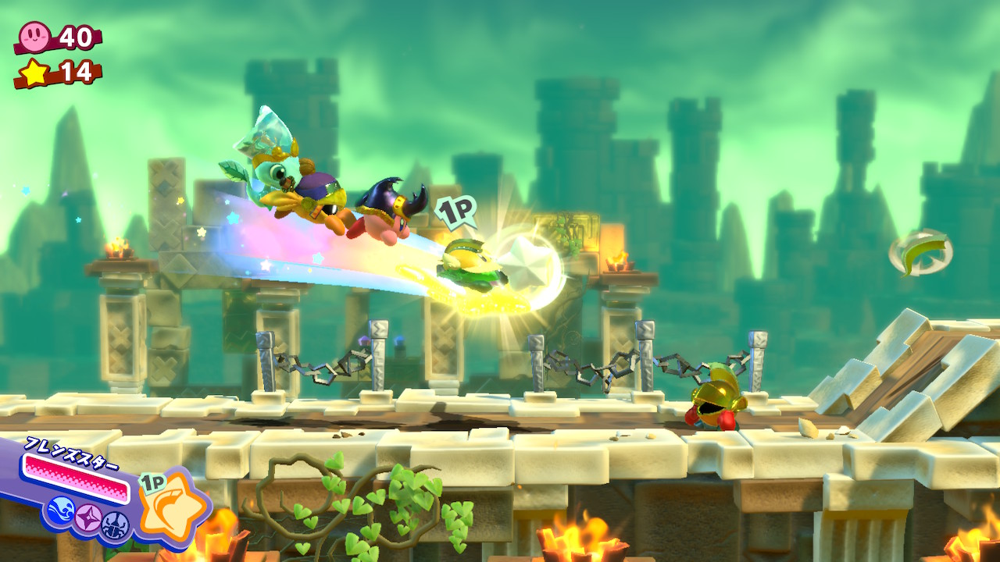
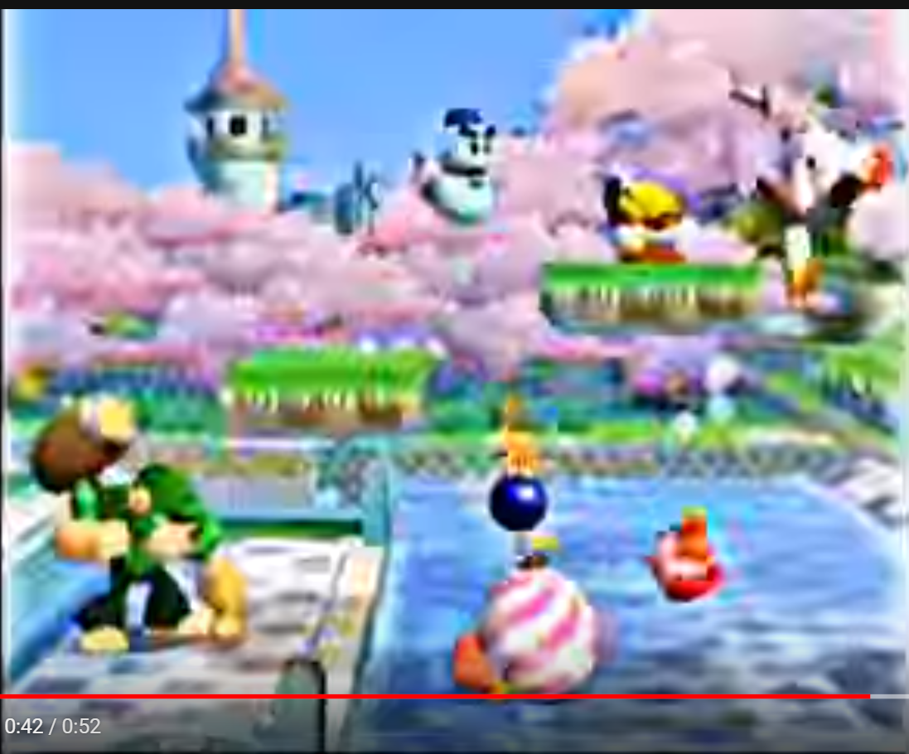

星のカービィ スターアライズに対する自分なりの所感
2018-03-21 21:40:53 +0900 JST
Categories: Game

私は星のカービィシリーズをプレイする時は必ず1日2ステージまでという縛りをつけています。
カービィだけは好きすぎて一気にプレイしたくなくて、少しずつ日数をかけて長くプレイしたいんですね。
発売日から毎日プレイしていますが、今ようやくステージ2のボスを撃破したところまでいきました。
今回Switch最新作のスターアライズについて、自分なりの所感を書きなぐっていきます。
幻の「星のカービィGC」
古くはゲームボーイから最新機Switchまで正統派と呼ばれる所謂2D横スクロールアクションのカービィがあるわけですが、唯一ゲームキューブだけはその正統派シリーズが出ていません。
カービィ64からカービィWiiの発売までに実に11年のブランクがあります。
この辺はNintendo公式の故岩田社長がインタビューをする「社長が訊く」の中で語られています。
星のカービィGCはスーパーデラックスの後継作品として映像もあるほど開発が進んでいたのですが、結局お蔵入りとなってしまいました。
インタビューの中では1～4人で遊べるカービィというのがHAL研の中で答えがなかなかでなかったとあります。
明言はされていませんが、スペック的なところも課題としてあったのではと私は考えています。
Wii、そしてスターアライズへ
1～4人で遊べるカービィは「いつでもイン」というシステムで星のカービィWiiで実現されました。
2～4Pがゲーム中いつでも参加できるというのですが、これが技術的にも難しい中よくできたなと思います。
横スクロールアクションでいつでもインするためには1Pカービィの近くでインできる必要がありますが、例えばカービィが挟まれそうになっているすぐ近くでインしても2人同時で死んでしまったり、狭い道ではインした瞬間壁にめり込むということも回避しなければならないからです。
ただこの時点ではヘルパーは実装されず、代わりにスピアー・ハンマー・ソード相当の能力を持つキャラクターを操作できるようにしていました。
そしてGCでずっとやりたかった「マルチプレイでのヘルパーシステム」がついにスターアライズで実装されたということです。

実はもっとシンプルに解決できた
Wiiで悩んだいつでもインのシステムですが、実はスターアライズには実装されませんでした。正確に言えば、いつでもインでなくてもよくなったというべきでしょうか。
いつでもインがカービィWiiに必要な理由としては、Wiiがカジュアルゲーム機として認知を上げたこととカービィのコンセプトである「皆が親しみ易いように」の2つがあると考えます。
つまりゲームの仕組みをあまり理解しなくとも、とりあえずボタンを1つ押せばいつでもカービィが遊べるというUIを実現するするために必要でした。
しかし今までいなかった場所に新たにインするためにかなりの技術的課題をクリアする必要がありました。
また上で書いた通り能力の切り替えに制限があり、別のキャラクターに差し替えるには一度アウトしてから別キャラクターでインしなおすということが必要でした。
スターアライズではCPUヘルパーを2～4Pに入れ替えることで実現します。
これは既に画面上に存在しているキャラクターを操作できるようにするため、Wiiの技術的課題がもっとシンプルに解決できたことを意味します。
またヘルパー自身もフレンズハートを投げることができるので、2～4Pもゲーム内で自由に能力を切り替えられるようになりました。
非常にシンプルかつ合理的なシステムに落ち着いたと思います。
もちろん初めからこの形に落ち着くのは難しく、HAL研がいろいろ試した結果だということでしょう。
ゲームデザインとマルチプレイとカメラ
これは2Pで操作したときの動画となります。カービィを中心としてカメラがまわり、カメラから外れたキャラクターは自動的にカービィのいる位置に戻されます。
この動きはWiiでも同じで、主に一人だけが突っ走ってカメラが引きになってしまうのを防ぐためにこのような仕様となっています。
ネタバレになりますが、実はこの動画の左上には隠し通路が存在します。ぎりぎりカメラに映るかぐらいの位置に道を用意することで気づいた人は隠し通路から褒美がもらえるデザインとなっています。
もし引きにしてしまうといきなりステージ全体が映ってしまい、隠しもクソもなくなってしまいます。
一方でこれはマルチプレイではなかなか自分の思うように操作ができないイライラにつながることもあります。
特にカービィGCではかなりカメラがアップな状態になっており、頻繁にワープが発生するでしょう。実際に解像度が480pのWiiでも多発しました。

YouTubeの動画からスクショなので画質悪いです。
それが今回Switchでは画面比が16:9になったことと最低解像度が720pになったことにより、4:3と比べてカービィから離れても割と操作できるようになりました。
今回スターアライズで快適なマルチプレイができるようになったのはSwitchのおかげかもしれません。
最近のカービィはGC時代にできなかったことを今の技術で解決しているところがあります。
例えばGC開発中にもう一つデザインしていた3D空間を自由に移動できるカービィですが、これは3DSのカービィのすいこみ大作戦で実現されました。
今回スターアライズでヘルパーシステムが実装されたのはこのGC時代の遺産がまだ残っていたのでいつかは来るだろう、ああ今来たのかぐらいでした。しかしこれでGC時代の構想はほぼすべてゲーム化してしまった今、次のカービィがどうなるか、はてさて楽しみですね。